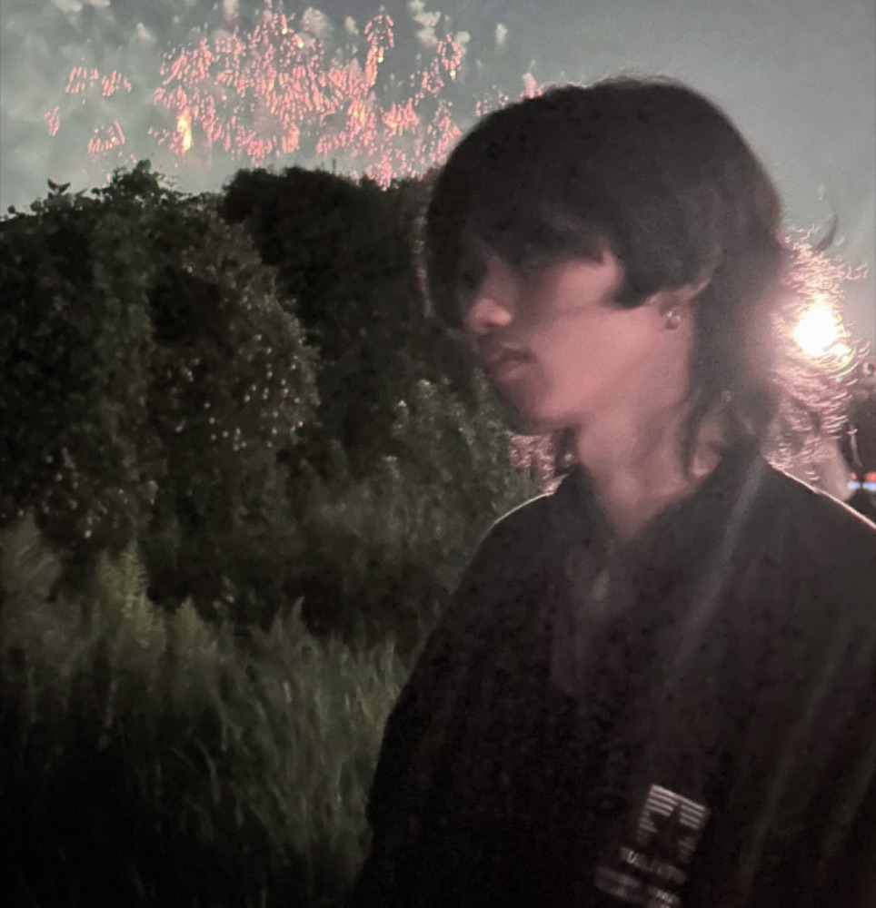

CG · Illustration · Animation
CGとアニメーション、イラストレーションを軸に制作しています。武蔵野美術大学大学院にて映像を専攻。現実にはない世界と物語を、絵と映像で届けたい。
About

こんにちは、私はリン シロウです。現在、武蔵野美術大学の映像・写真学科に在籍している大学院一年生です。私はこれまでに様々なクリエイティブな分野で活動してきましたが、特にCG（コンピュータグラフィックス）に強い興味を持っています。
私の趣味は絵を描くこととスキーです。絵を描くことは、私の創造力を育み、技術を磨くための重要な手段です。スキーは、自然の中でリフレッシュするだけでなく、バランス感覚や集中力を養う助けとなっています。
現在の研究分野はCGです。CGの魅力は、その無限の可能性にあります。現実には存在しない世界やキャラクターを創り出すことができるだけでなく、現実を超えた美しさや驚きを表現することができます。私にとってCGは、アイデアを具現化するための最適なツールであり、視覚的な物語を語る手段です。
私の目標は、手描きアニメーションを通じて観る人に感動や喜びを届けることです。アニメーションを通じて物語を語り、キャラクターの感情を伝えることで、人々の心に残る作品を作りたいと考えています。
これからも新しい技術やスタイルを取り入れながら、手描きアニメーションとCGの魅力を追求していきます。私の作品をご覧いただき、ご意見やご感想をお寄せいただけると幸いです。ありがとうございました。